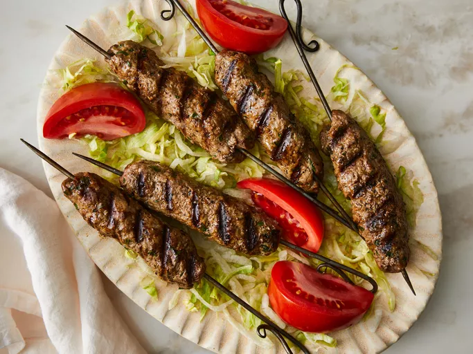

Kofta Kebabs

These kofta kebabs are made with ground lamb that's seasoned with garlic and six different kinds of spices, then molded onto skewers and cooked on the grill. They are very good! Serve with yogurt, flatbread, lettuce, tomato, and cucumber.
Prep Time: 45 mins
Cook Time: 5 mins
Additional Time: 30 mins
Total Time: 1 hr 20 mins
Servings: 28
Yield: 28 skewers
Ingredients
- 4 cloves garlic, minced
- 1 teaspoon kosher salt
- 3 tablespoons chopped fresh parsley
- 1 tablespoon ground coriander
- 1 teaspoon ground cumin
- half tablespoon ground cinnamon
- half teaspoon ground allspice
- quater teaspoon ground ginger
- quater teasopon ground black pepper
- 28 bamboo skewers, soaked in water for 30 minute
Directions
-
Mash garlic into a paste with salt using a mortar and pestle or the flat side of a chef's knife on your cutting board.
-
Mix garlic into lamb with onion, parsley, coriander, cumin, cinnamon, allspice, cayenne pepper, ginger, and pepper in a mixing bowl until well blended.
-
Form mixture into 28 balls. Form each ball around the tip of a skewer, flattening it into a 2-inch oval; repeat with remaining skewers. Place kebabs onto a baking sheet, cover, and refrigerate for at least 30 minutes, or up to 12 hours.
-
Preheat an outdoor grill for medium heat and lightly oil the grate.
-
Cook skewers on the preheated grill, turning occasionally, until browned and cooked through, about 5 to 6 minutes. An instant-read thermometer inserted into the center of a kebab should read at least 145 degrees F (63 degrees C).
-
Serve hot and enjoy!
Go back to main